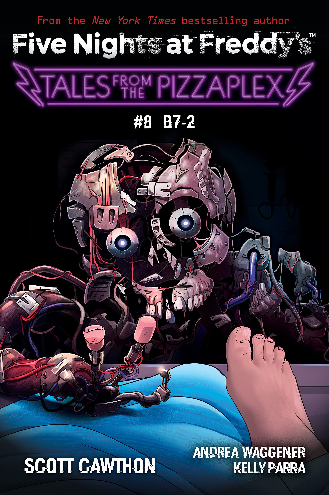

*B7-2* é o oitavo livro da coleção *Tales from the Pizzaplex*. A narrativa segue a história de um androide avançado chamado B7-2, que se torna autoconsciente, iniciando um perigoso conflito entre sua programação e sua humanidade emergente.
Enquanto B7-2 luta para entender seu lugar no mundo, ele começa a desafiar as ordens de seus criadores. Sua jornada de autodescoberta o coloca em conflito direto com as autoridades do Pizzaplex, culminando em um confronto eletrizante.